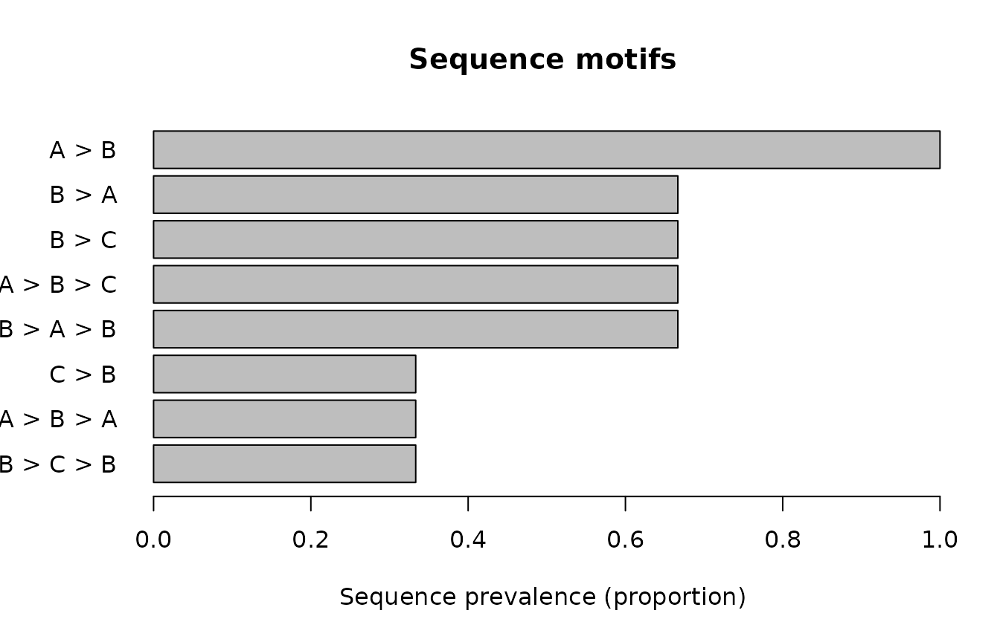

Contiguous Motif Workflow
Source:vignettes/contiguous-motif-workflow.Rmd
contiguous-motif-workflow.RmdScope
This article demonstrates the restricted contiguous-motif workflow in
gp3sequences. The workflow accepts ordinary long-format
data frames and does not require Gazepoint software, hardware, exports,
or gp3tools.
The functions describe recurring state windows and their locations. They do not infer attention, cognition, emotion, intention, psychological state, or causal mechanisms.
Synthetic ordered-state data
The example contains three sequences and one preserved grouping variable.
library(gp3sequences)
sequence_data <- data.frame(
sequence = c(
rep("s1", 5L),
rep("s2", 4L),
rep("s3", 3L)
),
order = c(1:5, 1:4, 1:3),
state = c(
"A", "B", "A", "B", "C",
"A", "B", "C", "B",
"B", "A", "B"
),
group = c(
rep("g1", 5L),
rep("g1", 4L),
rep("g2", 3L)
),
stringsAsFactors = FALSE
)
sequence_data
#> sequence order state group
#> 1 s1 1 A g1
#> 2 s1 2 B g1
#> 3 s1 3 A g1
#> 4 s1 4 B g1
#> 5 s1 5 C g1
#> 6 s2 1 A g1
#> 7 s2 2 B g1
#> 8 s2 3 C g1
#> 9 s2 4 B g1
#> 10 s3 1 B g2
#> 11 s3 2 A g2
#> 12 s3 3 B g2Extract contiguous motifs
extract_sequence_ngrams() enumerates contiguous state
windows only. Minimum and maximum motif lengths and the
overlapping-occurrence policy are explicit.
extracted <- extract_sequence_ngrams(
sequence_data,
sequence_id_col = "sequence",
order_col = "order",
state_col = "state",
metadata_cols = "group",
min_length = 2L,
max_length = 3L,
overlap = "allow"
)
head(extracted$occurrences)
#> sequence_id group motif_id motif_key motif motif_length start_index
#> 1 s1 g1 L2:S1|S2 S1|S2 A > B 2 1
#> 2 s1 g1 L3:S1|S2|S1 S1|S2|S1 A > B > A 3 1
#> 3 s1 g1 L2:S2|S1 S2|S1 B > A 2 2
#> 4 s1 g1 L3:S2|S1|S2 S2|S1|S2 B > A > B 3 2
#> 5 s1 g1 L2:S1|S2 S1|S2 A > B 2 3
#> 6 s1 g1 L3:S1|S2|S3 S1|S2|S3 A > B > C 3 3
#> end_index start_order end_order start_original_row end_original_row
#> 1 2 1 2 1 2
#> 2 3 1 3 1 3
#> 3 3 2 3 2 3
#> 4 4 2 4 2 4
#> 5 4 3 4 3 4
#> 6 5 3 5 3 5
#> occurrence_index
#> 1 1
#> 2 1
#> 3 1
#> 4 1
#> 5 2
#> 6 1Summarise, filter, and format motifs
Sequence prevalence uses every validated sequence as its denominator. Filtering is deterministic and retains explicit thresholds and tie handling.
motif_summary <- summarise_sequence_motifs(extracted)
motif_filter <- filter_sequence_motifs(
motif_summary,
min_occurrences = 2L,
min_sequences = 2L,
min_prevalence = 0.50,
motif_lengths = c(2L, 3L),
top_n = 10L,
rank_by = "sequence_prevalence",
ties = "include"
)
motif_table <- format_sequence_motifs(
motif_filter,
prevalence = "percent",
digits = 1L
)
motif_table$table
#> rank motif_id motif_key motif motif_length n_occurrences n_sequences
#> 1 1 L2:S1|S2 S1|S2 A > B 2 4 3
#> 2 2 L2:S2|S1 S2|S1 B > A 2 2 2
#> 3 2 L2:S2|S3 S2|S3 B > C 2 2 2
#> 4 2 L3:S1|S2|S3 S1|S2|S3 A > B > C 3 2 2
#> 5 2 L3:S2|S1|S2 S2|S1|S2 B > A > B 3 2 2
#> sequence_prevalence_percent occurrence_share_percent
#> 1 100.0 26.7
#> 2 66.7 13.3
#> 3 66.7 13.3
#> 4 66.7 13.3
#> 5 66.7 13.3
#> mean_occurrences_per_sequence mean_occurrences_when_present
#> 1 1.3 1.3
#> 2 0.7 1.0
#> 3 0.7 1.0
#> 4 0.7 1.0
#> 5 0.7 1.0Summarise motif positions
Positions may represent the start, centre, or end of each motif occurrence. Absolute positions use one-based state indices. Relative positions range from 0 to 1 across each sequence.
position_summary <- summarise_sequence_motif_positions(
extracted,
position = "centre",
scale = "relative",
by = "group"
)
position_summary$summary
#> group motif_id motif_key motif motif_length position_basis
#> 1 g1 L3:S1|S2|S1 S1|S2|S1 A > B > A 3 centre
#> 2 g1 L2:S1|S2 S1|S2 A > B 2 centre
#> 3 g1 L2:S2|S1 S2|S1 B > A 2 centre
#> 4 g1 L3:S2|S1|S2 S2|S1|S2 B > A > B 3 centre
#> 5 g1 L3:S1|S2|S3 S1|S2|S3 A > B > C 3 centre
#> 6 g1 L3:S2|S3|S2 S2|S3|S2 B > C > B 3 centre
#> 7 g1 L2:S2|S3 S2|S3 B > C 2 centre
#> 8 g1 L2:S3|S2 S3|S2 C > B 2 centre
#> 9 g2 L2:S2|S1 S2|S1 B > A 2 centre
#> 10 g2 L3:S2|S1|S2 S2|S1|S2 B > A > B 3 centre
#> 11 g2 L2:S1|S2 S1|S2 A > B 2 centre
#> position_scale n_occurrences n_sequences min_position max_position
#> 1 relative 1 1 0.2500000 0.2500000
#> 2 relative 3 2 0.1250000 0.6250000
#> 3 relative 1 1 0.3750000 0.3750000
#> 4 relative 1 1 0.5000000 0.5000000
#> 5 relative 2 2 0.3333333 0.7500000
#> 6 relative 1 1 0.6666667 0.6666667
#> 7 relative 2 2 0.5000000 0.8750000
#> 8 relative 1 1 0.8333333 0.8333333
#> 9 relative 1 1 0.2500000 0.2500000
#> 10 relative 1 1 0.5000000 0.5000000
#> 11 relative 1 1 0.7500000 0.7500000
#> mean_position median_position
#> 1 0.2500000 0.2500000
#> 2 0.3055556 0.1666667
#> 3 0.3750000 0.3750000
#> 4 0.5000000 0.5000000
#> 5 0.5416667 0.5416667
#> 6 0.6666667 0.6666667
#> 7 0.6875000 0.6875000
#> 8 0.8333333 0.8333333
#> 9 0.2500000 0.2500000
#> 10 0.5000000 0.5000000
#> 11 0.7500000 0.7500000format_sequence_motif_positions() changes display
precision and units without modifying the underlying analytical
object.
position_table <- format_sequence_motif_positions(
position_summary,
digits = 1L,
position_units = "percent",
include_rank = TRUE
)
position_table$table
#> group rank motif_id motif_key motif motif_length position_basis
#> 1 g1 1 L3:S1|S2|S1 S1|S2|S1 A > B > A 3 centre
#> 2 g1 2 L2:S1|S2 S1|S2 A > B 2 centre
#> 3 g1 3 L2:S2|S1 S2|S1 B > A 2 centre
#> 4 g1 4 L3:S2|S1|S2 S2|S1|S2 B > A > B 3 centre
#> 5 g1 5 L3:S1|S2|S3 S1|S2|S3 A > B > C 3 centre
#> 6 g1 6 L3:S2|S3|S2 S2|S3|S2 B > C > B 3 centre
#> 7 g1 7 L2:S2|S3 S2|S3 B > C 2 centre
#> 8 g1 8 L2:S3|S2 S3|S2 C > B 2 centre
#> 9 g2 1 L2:S2|S1 S2|S1 B > A 2 centre
#> 10 g2 2 L3:S2|S1|S2 S2|S1|S2 B > A > B 3 centre
#> 11 g2 3 L2:S1|S2 S1|S2 A > B 2 centre
#> position_scale position_unit n_occurrences n_sequences min_position
#> 1 relative percent 1 1 25.0
#> 2 relative percent 3 2 12.5
#> 3 relative percent 1 1 37.5
#> 4 relative percent 1 1 50.0
#> 5 relative percent 2 2 33.3
#> 6 relative percent 1 1 66.7
#> 7 relative percent 2 2 50.0
#> 8 relative percent 1 1 83.3
#> 9 relative percent 1 1 25.0
#> 10 relative percent 1 1 50.0
#> 11 relative percent 1 1 75.0
#> max_position mean_position median_position
#> 1 25.0 25.0 25.0
#> 2 62.5 30.6 16.7
#> 3 37.5 37.5 37.5
#> 4 50.0 50.0 50.0
#> 5 75.0 54.2 54.2
#> 6 66.7 66.7 66.7
#> 7 87.5 68.8 68.8
#> 8 83.3 83.3 83.3
#> 9 25.0 25.0 25.0
#> 10 50.0 50.0 50.0
#> 11 75.0 75.0 75.0Plot motif prevalence
plot_sequence_motifs() uses base R graphics. The
returned data frame contains the exact motifs and values used in the
plot.
plotted_motifs <- plot_sequence_motifs(
motif_summary,
metric = "sequence_prevalence",
top_n = 8L,
motif_lengths = c(2L, 3L),
ties = "include",
horizontal = TRUE
)
Sequence prevalence for the most frequent contiguous motifs.
plotted_motifs[
c("plot_rank", "motif", "motif_length", "plot_value")
]
#> plot_rank motif motif_length plot_value
#> 1 1 A > B 2 1.0000000
#> 2 2 B > A 2 0.6666667
#> 3 3 B > C 2 0.6666667
#> 4 4 A > B > C 3 0.6666667
#> 5 5 B > A > B 3 0.6666667
#> 6 6 C > B 2 0.3333333
#> 7 7 A > B > A 3 0.3333333
#> 8 8 B > C > B 3 0.3333333Plot motif locations
The strip display shows individual occurrence positions with deterministic stacking. No random jitter is used.
strip_data <- plot_sequence_motif_positions(
extracted,
position = "centre",
scale = "relative",
top_n = 5L,
display = "strip"
)Relative centre positions of selected motif occurrences.
head(
strip_data[
c(
"sequence_id",
"motif",
"position_value",
"plot_rank"
)
]
)
#> sequence_id motif position_value plot_rank
#> 1 s1 A > B 0.1250000 1
#> 2 s2 A > B 0.1666667 1
#> 3 s1 A > B 0.6250000 1
#> 4 s3 A > B 0.7500000 1
#> 5 s3 B > A 0.2500000 2
#> 6 s1 B > A 0.3750000 2The distribution display provides a compact base-R summary for the same structural positions.
plot_sequence_motif_positions(
extracted,
position = "centre",
scale = "relative",
top_n = 5L,
display = "distribution"
)Distributions of relative motif centre positions.
Interpretation boundary
The reported counts, prevalence values, and positions describe the supplied ordered states under the declared preparation, motif-length, overlap, filtering, and position rules. Any substantive interpretation belongs to the research design and cannot be inferred automatically from motif structure alone.